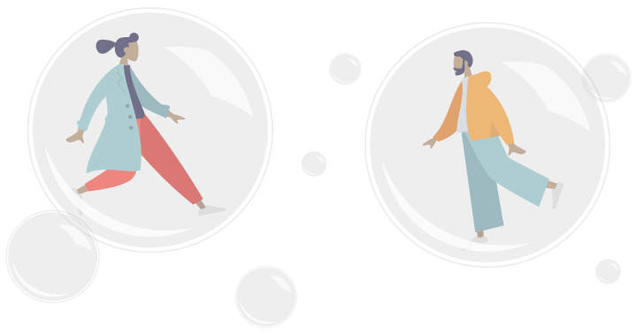
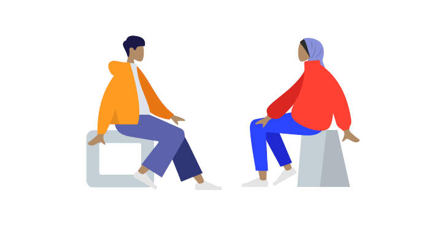
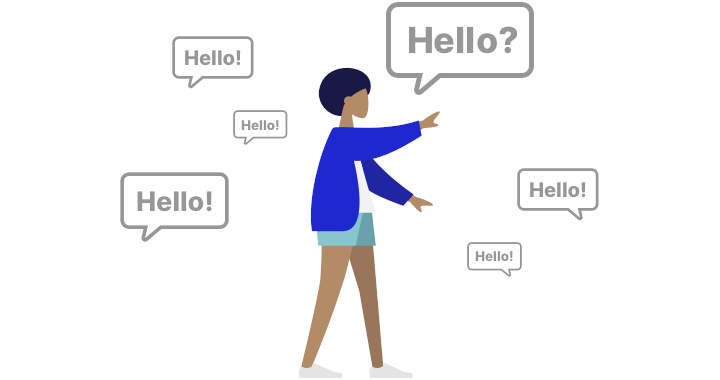
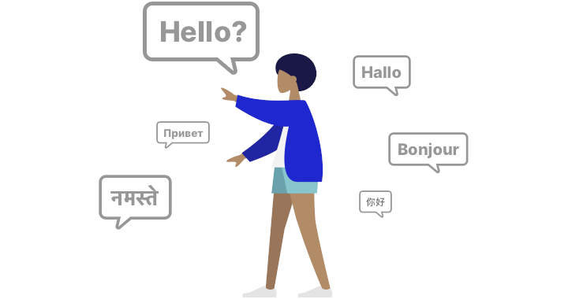
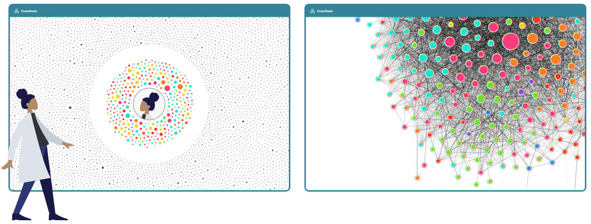

We live our lives in bubbles.

Our friends, our sources, and our conversations are not randomly selected. Instead we are much more likely to hear information which tilts towards our own opinions, likes and interests.
While there are bubbles everywhere, they take on a special character in our electronic lives. Self-selection, curation by algorithms, and economic incentives often shape online communities into echo chambers, where everyone agrees, and everyone repeats the same opinions.


Other communities with other backgrounds, other ideas and other opinions exist, but we are actively cut off from them. The result is repetition and sameness on the one hand and misunderstanding on the other.

Crossfoam analyses and visualises your filter bubbles on social media (so far only Twitter), so you can discover the extent to which your online community is an echo chamber or a place of diverse opinions. Fine-grained analysis allows you to explore your social network, diversify it, or - if you prefer - dig deeper into your bubble. Crossfoam thus becomes a tool for electronic self-determination.
Features
Gain Insights into your Network
Uncover relationships and connections within your network. Understanding through exploration.
Try it now »
Privacy by Design
Everything happens and stays on your computer. No remote services involved. All open source code.
Learn more »
Your Network, your Data
The data aggregated through the tool belongs to you. You can simply export and use it in any another application.
Our take on ethical design »
Download
Crossfoam is available from the extension stores below:
Privacy
Crossfoam works on top of a social network, and Crossfoam can not possibly improve user privacy of this social network. Information collected by Crossfoam is publicly accessible via the social network API, as well as over the social network app and web interface, it is thus considered public information. Crossfoam's efforts are thus restricted to responsibly dealing with the additional information created by analysing public information and respect user privacy with regard to this additional information.
For this reason Crossfoam's architecture is user-centered and decentralised. While Crossfoam collects and analyses information in the background, information flow is strictly one-directional, no information is ever communicated to Ultrapop servers during ordinary operation, everything is stored solely on user devices. Anonymised information may be exchanged, but only with the express permission of the user, and only by user request.
Crossfoam may collect information on unexpected behaviour, errors, and possible crashes, but unless users give express permission in each individual instance, this information will also never leave user devices.
Ethical Design
We practice Ethical Design. Ethical Design respects Human Rights, respects Human Effort, respects Human Experience.
Crossfoam respects Human Rights by being free and open source, as well as by its decentralised design. Crossfoam is provided free of charge, with the source code accessible under the **GPL License** for review and modifications. Crossfoam performs all data collection, computation, and presentation on the client device, no connection to Ultrapop servers is made during ordinary operation. The collected data can be easily exported via an interoperable format, enabling users to take their data and move to another service.
Crossfoam respects Human Effort by being accommodating, unobtrusive and functional. The tool will never tell users what to do or not to do, and it will never hide or censor content. Instead, Crossfoam provides an additional, different perspective, thus enabling users to see their multi-dimensional situation more clearly, and make more informed decisions on how to interact with social media accounts and content. All its operation and computation take place in the background in a throttled mode, leaving both bandwidth and computational resources for the primary tasks the user is performing. At the same time, progress is always clearly communicated, leaving no doubt as to the current state of the tool. It allows for users to interact with the tool and configure it if so desired, enabling users to become both researchers as well as research subject at the same time.
Crossfoam respects Human Experience by working mostly invisible and in the background, providing users with additional information where they need it, when they need it. It never obscures or reformats content, instead augmenting it with additional information in an unobtrusive fashion, conforming to the visual language of the content it augments. Where further information is provided in views separate from the original content, it is displayed with the utmost clarity, refraining from purely decorative elements. User Experience is tested, allowing for largely intuitive operation.
For more information on Ethical Design, visit https://2017.ind.ie/ethical-design/.
Funding
This project was part of the fifth iteration of the ProtoypeFund. It, thereby, received financial funding through the Software Sprint Program, run by the BMBF.
We thank the whole PrototypeFund team for their support and the ministry for providing us with an opportunity to invest time into a not for profit, open source project for empowering users.
We are ULTRAPOP
Hey, we are Sebastian & Daniel. We are interested in making this world a better place. While technology is not the only way of doing so, technology has become an important part of our lifes. Its interwoven into our social fabrics and interactions. We believe that technology and information literacy is a crucial skill for informed decision making and discourses in the digital world. We hope that Crossfoam can become a part of this conversation.
Sebastian Meier
www.sebastianmeier.eu
twitter.com/seb_meier
Daniel Lommes
www.lomm.es
twitter.com/lommes
Credits
The beautiful illustrations of people in the story above are by Pablo Stanley, from his Humaaans project.